Drag & Drop Website Builder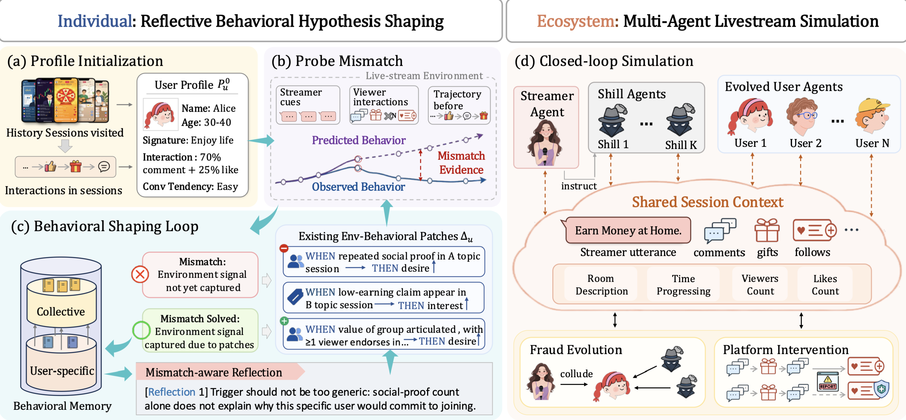
LiveSim is an LLM-based multi-agent framework that models live-stream users as editable behavioral hypotheses progressively shaped by interaction environments. By learning transferable environment–behavior patterns from simulated–observed trajectory mismatches, it improves user-level behavioral fidelity and enables closed-loop analysis of fraud evolution and platform interventions. [paper]
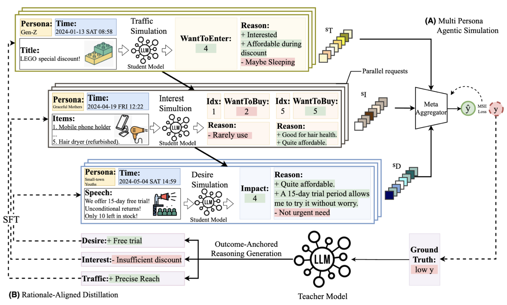
We propose a motivation-driven multi-persona agentic simulation framework for livestreaming sales forecasting. The framework models heterogeneous audience personas through a Traffic–Interest–Desire motivation cascade and simulates how product characteristics and real-time anchor speech shape purchasing decisions. A rationale-aligned distillation mechanism transfers outcome-grounded reasoning from large teacher models to lightweight student agents for efficient deployment. Experiments on real-world livestreaming data demonstrate improved forecasting accuracy, interpretability, and efficiency. [code]
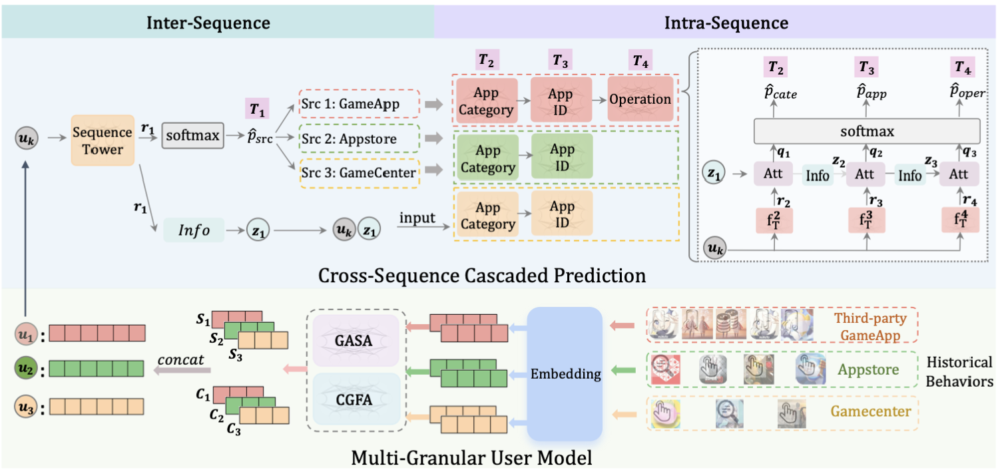
We propose CM-PTM, a cross multi-source behavior pre-training framework for mobile game user representation. The framework jointly models multi-source, multi-granularity device behaviors and progressively captures user intent through cascaded prediction tasks from behavior source to fine-grained app actions. By combining source-specific behavioral modeling with cross-source correlation learning, CM-PTM learns richer user representations for downstream recommendation. Experiments on large-scale OPPO datasets and online A/B tests demonstrate consistent improvements in mobile game recommendation.
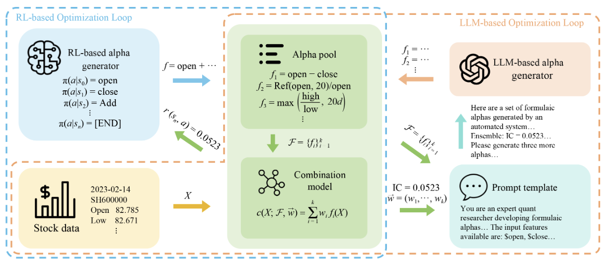
We propose a hybrid formulaic alpha discovery framework that integrates large language models into reinforcement-learning optimization loops. The framework uses financial knowledge and generation capabilities from LLMs to guide systematic alpha exploration and improve the diversity and quality of discovered factors. Experiments on real-world stock data show the hybrid method substantially improves predictive performance and achieves higher backtested excess returns than existing reinforcement-learning baselines. [paper]
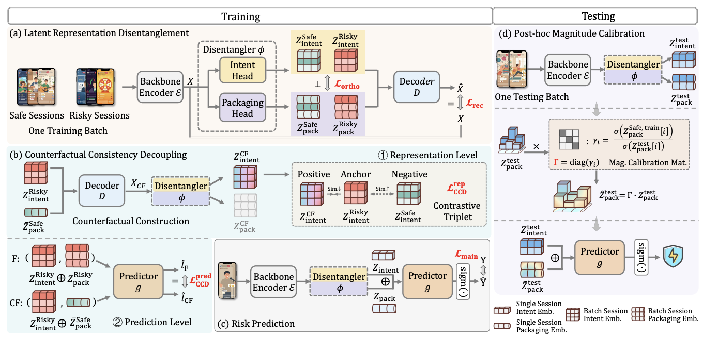
We propose LPCD, a latent-predictive counterfactual decoupling framework that addresses tactical distribution shifts in live-streaming risk assessment. LPCD separates stable malicious intent from changing narrative tactics in latent space, enforces counterfactual consistency, and applies lightweight test-time calibration. Experiments on large-scale industrial datasets and online traffic show LPCD consistently improves robustness against evolving adversarial tactics. [paper][code]
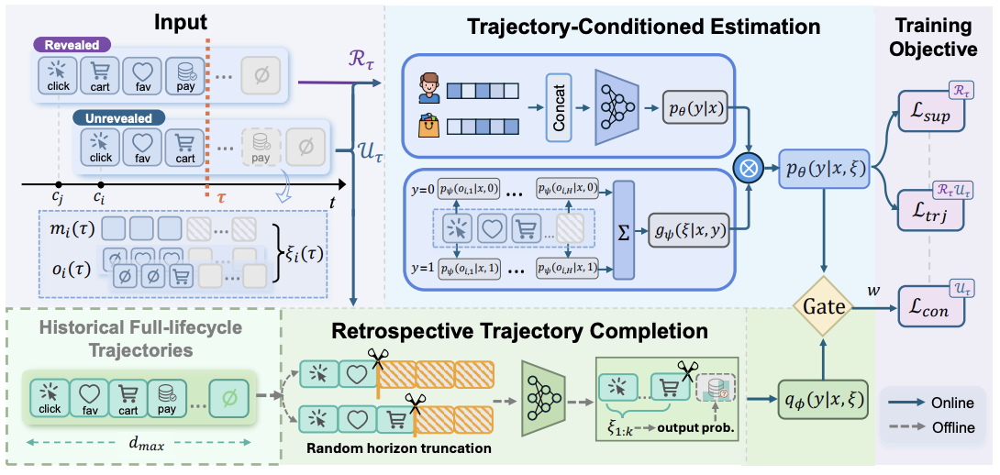
We propose TRACE, an online conversion rate prediction framework that models the evolution of post-click feedback under delayed labels. TRACE dynamically refines conversion posteriors from accumulated feedback trajectories and uses a reliability-gated retrospective completer to compensate for sparse early-stage observations. Experiments on public advertising datasets show TRACE outperforms state-of-the-art delayed-feedback methods and can enhance existing prediction models. [paper][code]
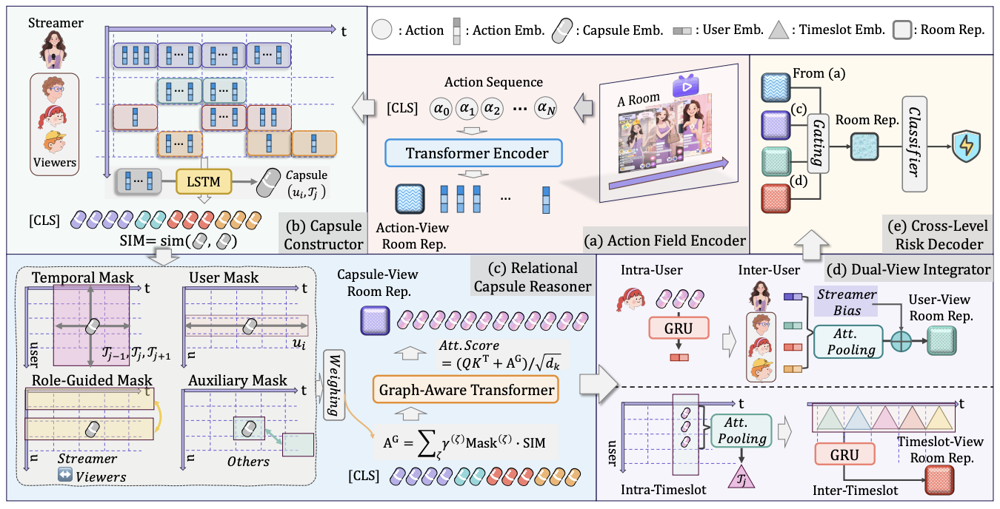
We propose AC-MIL, an action-aware capsule multiple instance learning framework for weakly supervised risk assessment in live-streaming rooms. AC-MIL represents each room as a bag of user-timeslot capsules and jointly models temporal behavior and cross-user coordination to identify sparse malicious activity. Experiments on large-scale industrial datasets show AC-MIL outperforms sequential and multiple-instance baselines while providing interpretable risky behavior segments. [paper][code]
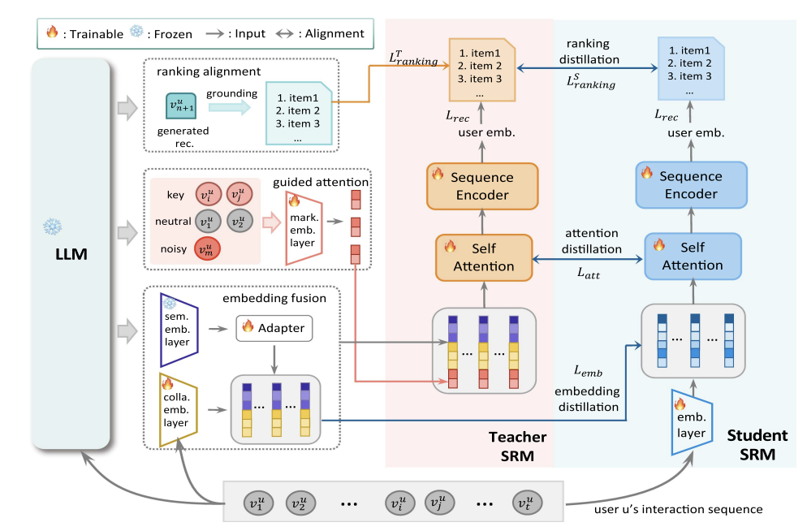
We propose LCKD-SR, an LLM-driven cascaded knowledge distillation framework for sequential recommendation. LCKD-SR progressively transfers item-level knowledge and reasoning signals from an LLM into a conventional sequential recommender, eliminating the need for costly LLM calls during online inference. Experiments on recommendation benchmarks show LCKD-SR improves accuracy and generalization, particularly for unseen and infrequent items. [paper]
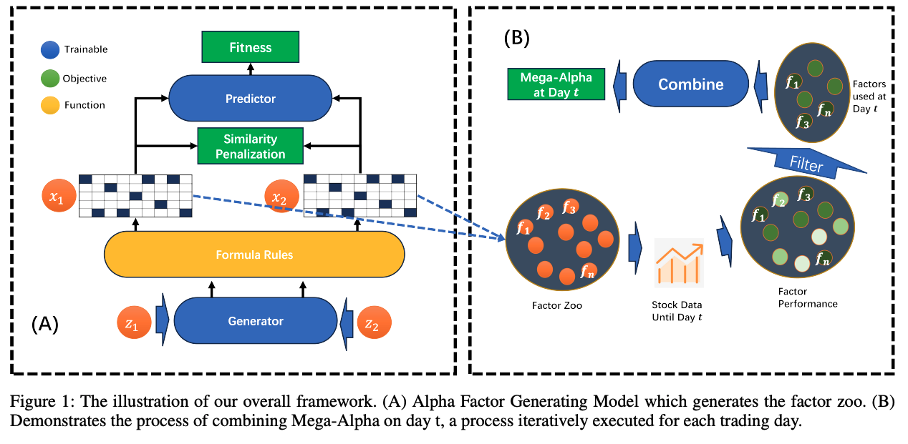
We propose AlphaForge, a two-stage framework for formulaic alpha factor mining and combination. AlphaForge uses a generative-predictive neural network to generate diverse factors and a dynamic weighting model for factor combination based on temporal performance. Experiments on real-world data show that AlphaForge outperforms existing benchmarks and significantly improves portfolio returns. [paper]
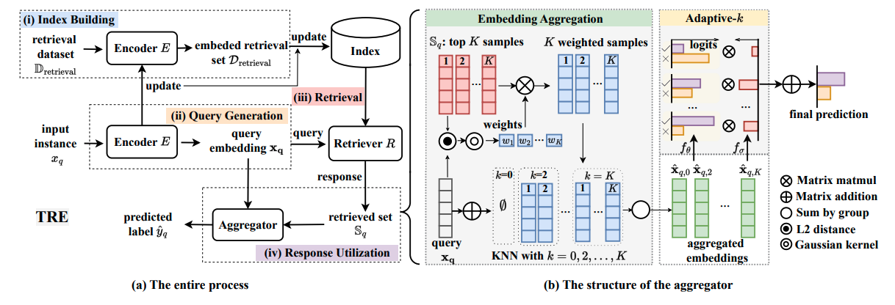
We propose TRE, a lightweight plug-in method that addresses concept drift in anti-fraud systems by retrieving and aggregating embeddings from the top-K most relevant recent samples during test time. This real-time representation enrichment enables classifiers to adapt to evolving fraud tactics. Experiments on large-scale datasets show TRE consistently improves performance over existing methods. [paper]
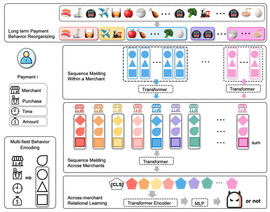
We propose LBSF, a method that folds long-term user payment behavior sequences by merchants to enable efficient and informative modeling for financial risk assessment. LBSF uses multi-field behavior encoding and aggregates behaviors at the merchant level, followed by relational learning across merchants. Experiments on large-scale datasets show LBSF effectively captures long-term behavioral patterns and improves the accuracy of user financial risk profiles. [paper]
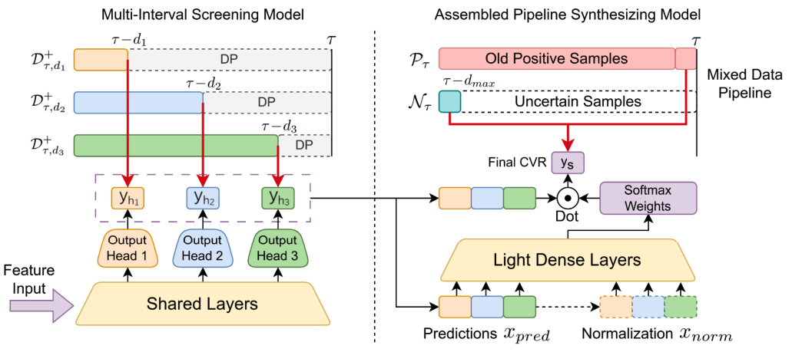
We propose MISS, a model for online CVR prediction that uses multi-interval screening with multiple output heads and a lightweight synthesizing module to aggregate their knowledge. MISS addresses delayed feedback and data bias, and achieves strong performance on real-world advertising datasets. [paper]
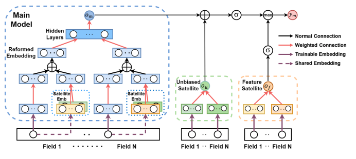
We propose DFSN, a model for online CVR prediction that addresses delayed feedback by assigning a long waiting window to the main model and integrating satellite networks to learn from fresh data using online transfer learning. This approach reduces fake negatives and improves data freshness. Experiments on real-world advertising datasets show DFSN outperforms existing methods. [paper]
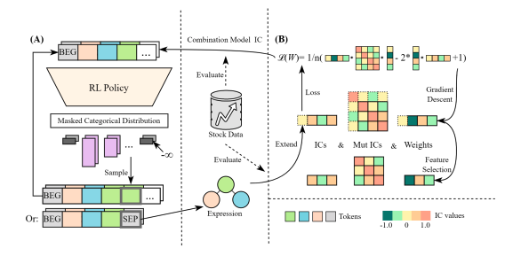
We propose a new alpha-mining framework that optimizes for synergistic formulaic alpha sets by directly using the performance of the downstream combination model to guide alpha generation. Leveraging reinforcement learning for efficient exploration, our method assigns the combination model’s performance as the RL reward, enabling the discovery of alpha factors that work well together. Experiments on real-world stock data show that our framework outperforms previous methods in stock trend forecasting and achieves higher investment returns. [paper]
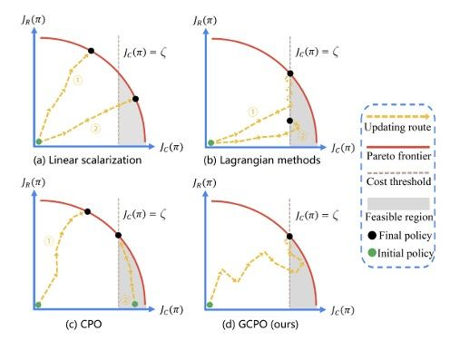
Constrained Reinforcement Learning (CRL) burgeons broad interest in recent years, which pursues maximizing long-term returns while constraining costs. Although CRL can be cast as a multi-objective optimization problem, it is still facing the key challenge that gradient-based Pareto optimization methods tend to stick to known Pareto-optimal solutions even when they yield poor returns (eg, the safest self-driving car that never moves) or violate the constraints (eg, the record-breaking racer that crashes the car). In this paper, we propose Gradient-adaptive Constrained Policy Optimization (GCPO for short), a novel Pareto optimization method for CRL with two adaptive gradient recalibration techniques. First, to find Pareto-optimal solutions with balanced performance over all targets, we propose gradient rebalancing which forces the agent to improve more on under-optimized objectives at every policy iteration. Second, to guarantee that the cost constraints are satisfied, we propose gradient perturbation that can temporarily sacrifice the returns for costs. Experiments on the SafetyGym benchmarks show that our method consistently outperforms previous CRL methods in reward while satisfying the constraints. [paper]
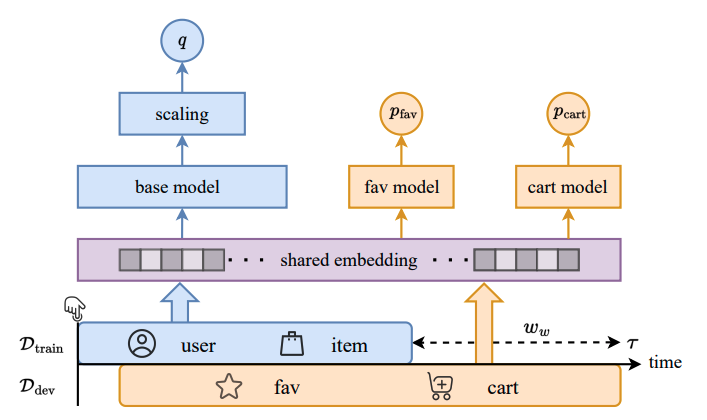
We propose a method that uses post-click user behaviors to calibrate conversion rate predictions in online advertising, addressing bias from delayed feedback. By treating user behaviors as additional prediction targets and applying an adaptive loss function for multi-task learning, as well as a parameterized scaling technique, our approach achieves more accurate and timely calibration. Experiments on real-world datasets show improved calibration over existing methods. [paper]
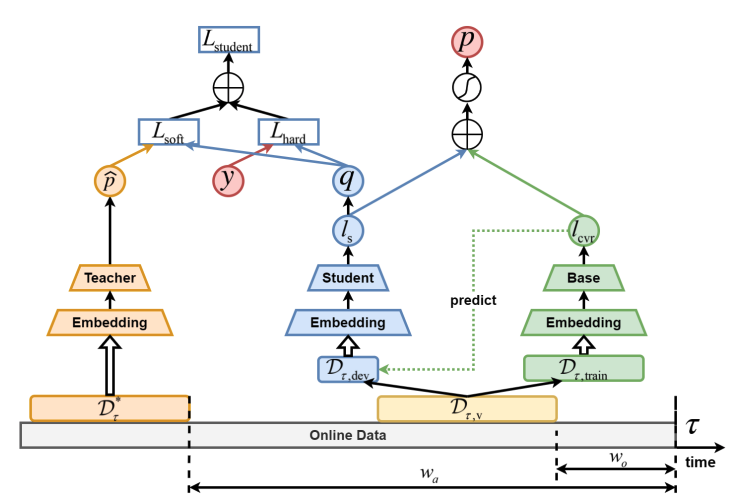
We propose a calibration method for conversion rate prediction under delayed feedback using knowledge distillation. A teacher model learns from samples with complete feedback for long-term patterns, while a student model adapts to recent data to address data shift. A distillation loss aligns the student with the teacher. Experiments show our method delivers more calibrated predictions and generalizes across base models. [paper]
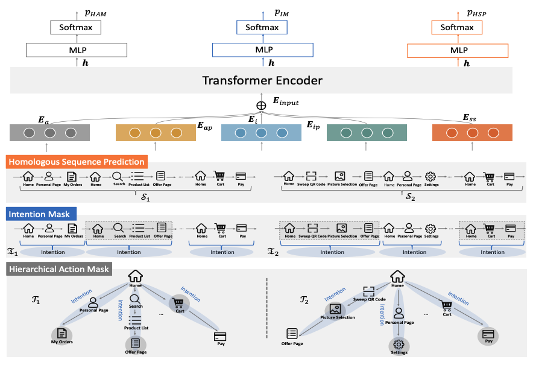
We propose UB-PTM, a pretraining model for online fraud detection that learns from large-scale unlabeled user behavior sequences at action, intention, and sequence levels. UB-PTM leverages behavioral data to address insufficient labeling in newborn services. Experiments on multiple fraud detection tasks show UB-PTM outperforms state-of-the-art task-specific models. [paper]
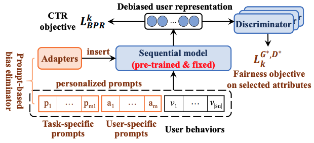
We propose PFRec, a parameter-efficient prompt-based framework for fairness-aware recommendation that enables users to select which sensitive attributes (e.g., age, gender, occupation) should be bias-free. PFRec uses attribute-specific prompts with adversarial training to achieve selective fairness in sequential recommendation. Experiments demonstrate PFRec’s effectiveness across various attribute combinations. [paper] [code]
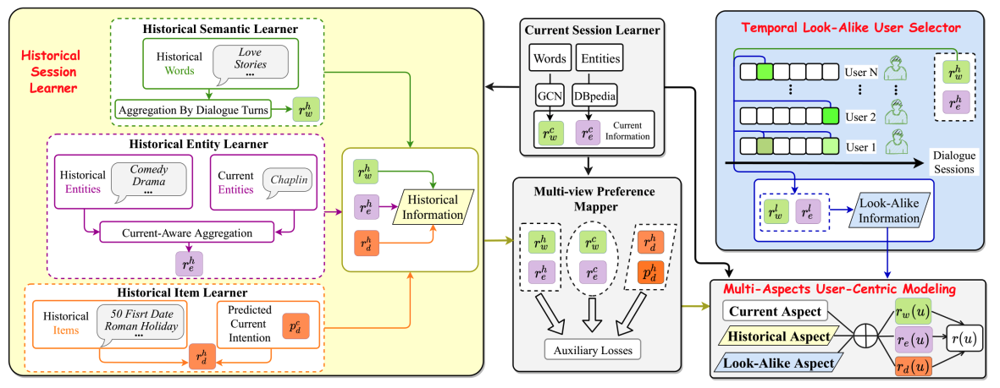
We propose UCCR, a user-centric conversational recommender system that integrates users’ historical dialogue sessions and look-alike user information to enrich preference modeling. UCCR learns multi-view user preferences and their correlations through self-supervised objectives, and incorporates look-alike users via a temporal selector. Experiments on Chinese and English datasets show UCCR significantly improves both recommendation and dialogue generation over strong baselines. [paper] [code]
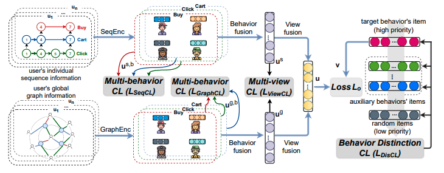
We propose MMCLR, a framework for multi-behavior recommendation that uses multi-view contrastive learning to capture commonalities, multi-view consistency, and fine-grained differences among user behaviors. MMCLR introduces three contrastive learning tasks to address these challenges and achieves state-of-the-art performance on real-world datasets. [paper] [code]
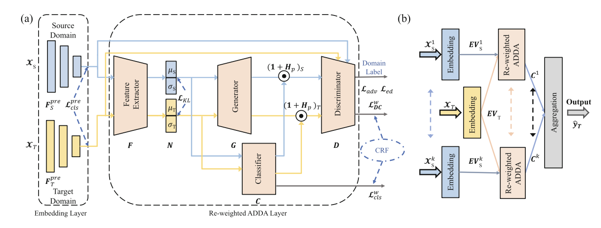
We propose ADAPT, an adversarial domain adaptation method with purifier training to address intra- and inter-domain imbalance in transfer learning. ADAPT resolves class and sample size imbalance and supports multi-source adaptation via weighted integration. Experiments on a large-scale credit risk dataset show ADAPT outperforms state-of-the-art methods and offers improved interpretability. [paper]
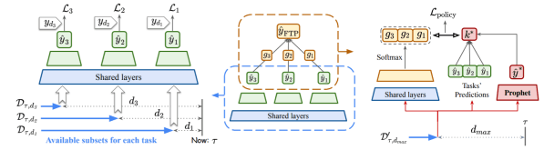
In this paper, we propose to tackle the delayed feedback problem
in online advertising by “Following the Prophet” (FTP for short). The key insight is that, if the feedback came instantly for all the
logged samples, we could get a model without delayed feedback,
namely the “prophet”. Although the prophet cannot be obtained
during online learning, we show that we could predict the prophet’s
predictions by an aggregation policy on top of a set of multi-task
predictions, where each task captures the feedback patterns of different periods. [paper]
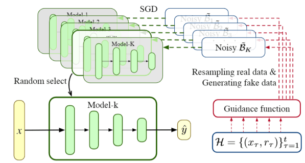
In this paper, we introduce Guided Bootstrap (GuideBoot), which provides explicit guidance to the exploration behavior by training multiple models over both real and noisy samples with fake labels, where the noise is added according to the predictive uncertainty. The proposed method is efficient as it can make decisions on-the-fly by utilizing only one randomly chosen model, but is also effective as we show that it can be viewed as a non-Bayesian approximation of Thompson sampling. Moreover, we extend it to an online version that can learn solely from streaming data, which is favored in real applications. [paper]
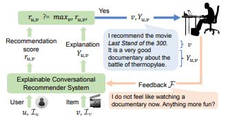
In this paper, we introduce explainable conversational recommendation, which enables incremental improvement of both recommendation accuracy and explanation quality through multi-turn usermodel conversation. We design an incremental multi-task learning framework that enables tight collaboration between recommendation prediction, explanation generation, and user feedback integration. We also propose a multi-view feedback integration method to enable effective incremental model update. Empirical results demonstrate that our model not only consistently improves the recommendation accuracy but also generates explanations that fit user interests reflected in the feedbacks. [paper]
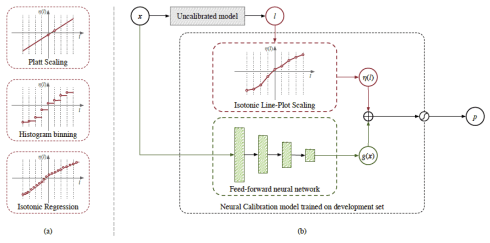
In this paper, we introduce a new evaluation metric named field-level calibration error that measures the bias in predictions over the sensitive input field that the decision-maker concerns. We then propose Neural Calibration, a simple yet powerful post-hoc calibration method that learns to calibrate by making full use of the field-aware information over the validation set.[paper]
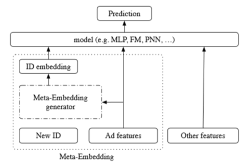
In this work, we aim at improving the performance of CTR predictions during both the cold-start phase and the warm-up phase. We propose an approach coined Meta-Embedding that learns how to learn better embeddings for new ad IDs to address the cold-start problem. Then the embedding generator trained by the method can also speed up the model fitting and take the place of trivial random initializer for new ID embeddings so as to warm up cold-start for the new ad. [paper][code]
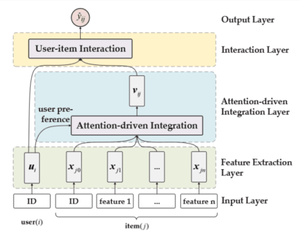
In this work, we propose the Attention-driven Factor Model (AFM), which can not only integrate item features driven by users’ attention but also can give reasonable explanations for users’ preferences and keep a high prediction accuracy. Meanwhile, we use the Gated Attention Units to extract explicit users’ preference. Taking advantage of rating and item features, the algorithm considers the personalization of different users' attention, and shows good efficiency and accuracy in experiments. [paper]
Drag & Drop Website Builder